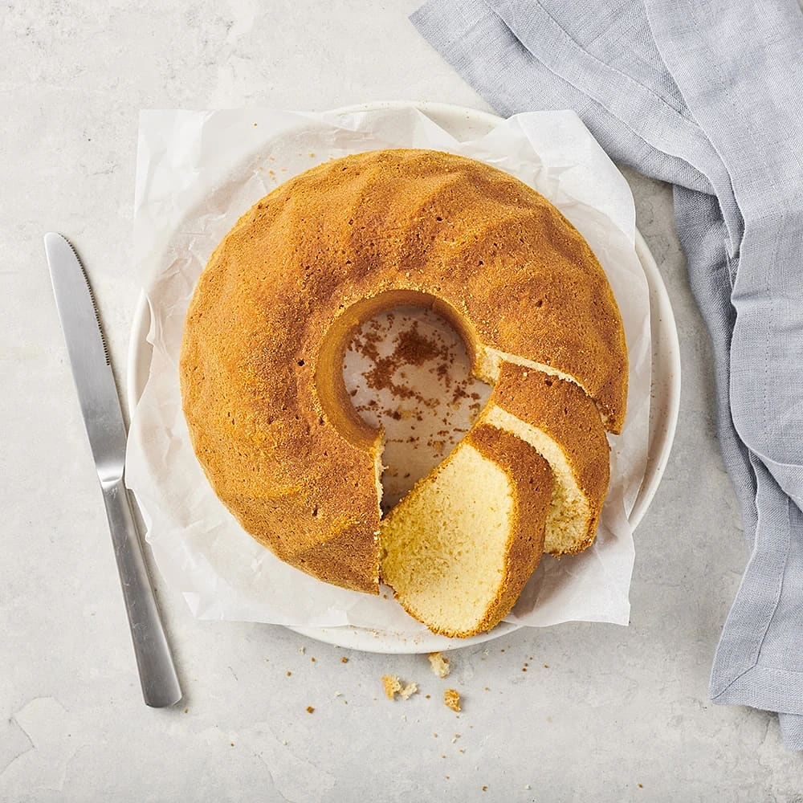

| 1 | 1msk smör eller maragrin till formen |
| 2 | 50g smör |
| 3 | 3 ägg | 4 | 3 dl strösocker |
| 5 | 2tsk bakpulver |
| 6 | 1 1/2 dl mjölk |
| 7 | 3 1/2 dl vetemjöl |
| 8 | Eventuella smaksättningarna som kardemumma eller vaniljsocker |
Gör så här
- Sätt ugnen på 175°C
- Smörj och bröa en bakform.
- Vispa ägg och socker pösigt
- Blanda mjöl, bakpulver och ev någon av smaksättningarna och rör ner i äggsmeten
- Koka upp mjölken med matfettet och rör ner det
- Häll smeten i formen.
- Grädda kakan genast i nedre delen av ugnen 35-40 minuter. Känn efter med sticka om kakan är klar. Då ska stickan vara torr.